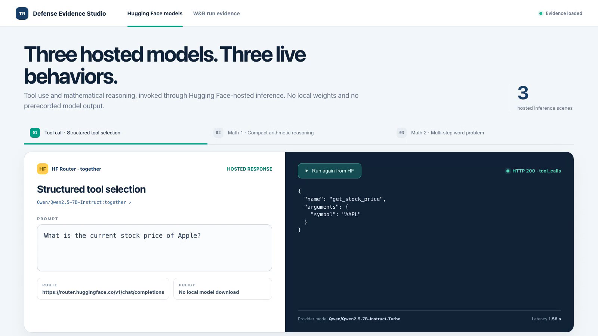
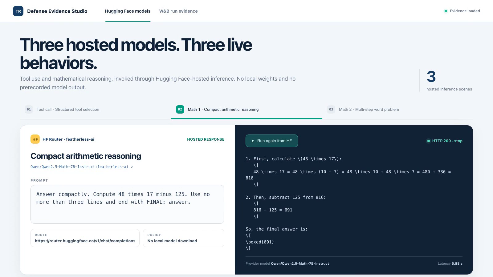
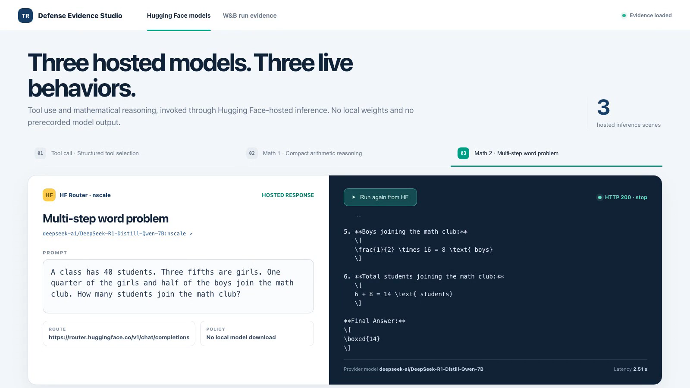
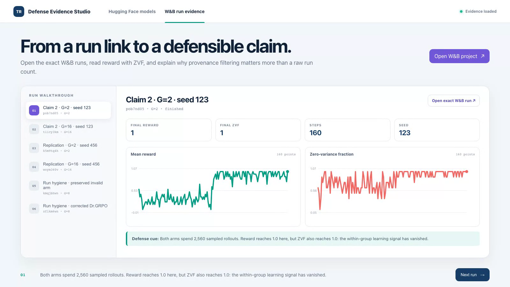
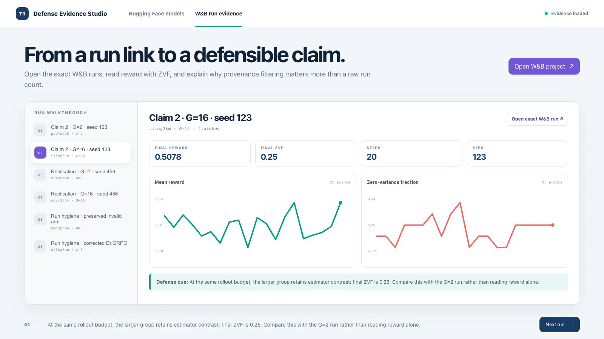
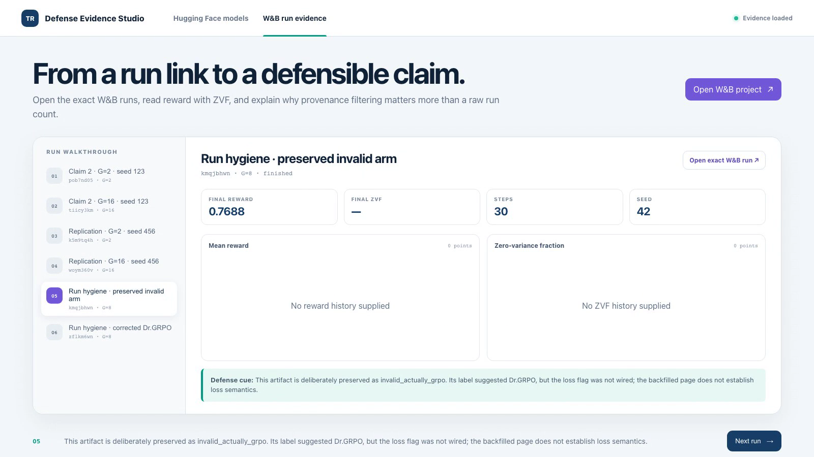
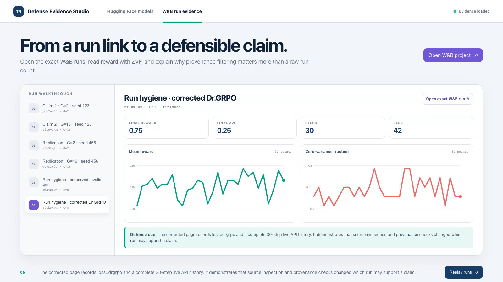

01 · Hosted tool use
The model emits a structured tool call
Qwen2.5-7B selects get_stock_price with symbol AAPL; inference ran through the Hugging Face Router.

Seven verified frames. Use this if the Space, W&B, or video playback is unavailable.
Qwen2.5-7B selects get_stock_price with symbol AAPL; inference ran through the Hugging Face Router.

Qwen2.5-Math-7B executes the arithmetic rather than selecting a tool.

DeepSeek-R1-Distill-Qwen-7B produces a worked result through a separate hosted provider.

At 2,560 sampled rollouts, reward and ZVF both reach 1.0. The estimator has lost within-group contrast.

Under the same rollout budget, final ZVF is 0.25. Compare the paired runs rather than reward alone.

The preserved invalid arm is audit evidence, not a valid Dr.GRPO result.

The corrected Dr.GRPO arm has a complete history and the repaired loss semantics.

Defense-safe wording: exact completion-length contraction is approximately 3.8–12.2%; say “roughly 4–12%.”